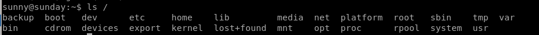
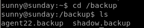
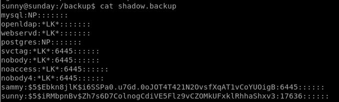
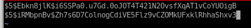

Linux Boxes
sunday
nmap
all ports
targetted ports
finger user enumeration
usage
scan report
scan report on root
ssh password brute force w/ patador & Hydra
finding good password list
sunny ssh_login bruteforce
ssh sunny
sudo -l
ls /
hashcat
bruteforce
sammy
sudo -l /usr/bin/wget
sudo wget -i /etc/shadow
troll script
privesc with /root/troll
proof of overwrite /root/troll script on root
potential shellshock (fail)
assigning env variable to shellshock & testing
privesc through wget etc/shadow
wget upload.php
upload.php
useradd st0ve
php server
edit shadow
wget shadow
log into root
privesc with /usr/bin/pfsh
user/root
lessons learned
ls /

the
folder is NOT standard in linux home directories, lets take a look at that:

Nice theres a /etc/shadow backup folder containing login passwords for sunny and sammy

lets store both these hashes for
hashcat
or
crackstation
